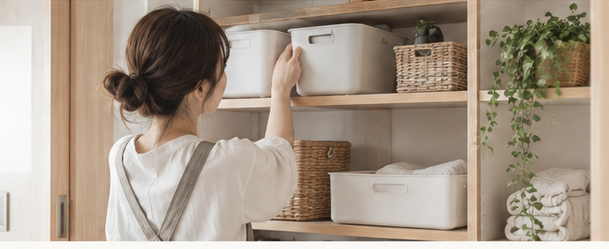

チラカラン
ズボラでも、ちゃんと散らからん。
☰
ホーム
カテゴリ
記事一覧
このサイトについて
🔍
＼ 頑張るより、仕組みを変える ／
ズボラでも、
ちゃんと散らからん。
片付け、掃除、洗濯、詰め替え。毎日の「めんどくさい」を、頑張らなくても回る仕組みに変える暮らしメディアです。
検索
詰め替え
収納
掃除
洗濯

何をラクにしたい？
記事一覧を見る →
🧺
片付けラク
散らかり・収納・定位置
🧹
掃除ラク
汚れ・浮かせる・掃除頻度
👕
洗濯ラク
洗う・干す・しまう
🍳
キッチンラク
調理・洗い物・補充
🛁
お風呂・洗面ラク
詰め替え・ヌメリ・身支度
🏠
暮らしラク
名もなき家事・日用品
新着記事
記事一覧を見る →